RayTracying最关键的点是：
👁看出去的世界
而非世界如何达到👁
这也是这个算法叫做ray tracying - 光线跟踪的原因。
一般来说屏幕坐标都是始于左上角，然后朝右和下延伸。

不过这里为了作图方便，我们把坐标系按照数学中更常见的方式把原点放于屏幕中央，x和y的延伸方向按照平时的习惯来放。
 这样可以知道屏幕坐标系\(S_x\)和画布坐标系\(C_x\)的变换:
这样可以知道屏幕坐标系\(S_x\)和画布坐标系\(C_x\)的变换:
\[ S_x = \frac{C_w}{2} + C_x \]
\[ S_y = \frac{C_h}{2} - C_y \]
因为我们屏幕是二维的，无论我们怎样模拟，实际上都是要把物体画在一个二维的平面（画布）上，我们这里就假设我们把👁放在原点上，而有一扇窗户在坐标轴 z = d 处 ，我们眼睛能看到的也就是窗户出去的世界。
那么对于画布上的任意一点，在窗户上都有一个对应的位置，因为它们是中心相同平面平行。

所以对画布上的每一个点\(C_x, C_y\)我们都能找到窗户上的对应点\(V_x, V_y\)，加上上一段话中的对应关系，实际上就是一个比例的问题，所以我们可以继续知道画布坐标系\(C_x, C_y\)在窗户上的对应坐标\(V_x, V_y\)为：
\[ V_x = C_x\frac{V_w}{C_w} \]
\[ V_y = C_y\frac{V_h}{C_h} \]
同时因为窗户放在 z = d 处，我们知道：
\[ V_z = d \]
这就有了如何将画布上的每一点转化为窗户上的每一点的坐标变换。
从眼睛👁射出的光线，我们都可以看成是\(\overrightarrow{OP}\)。
同时P点位置也可以写成： \(P = O + t(V-O)\), 令\(\overrightarrow{D}\)为\(V-O\)，也就是其方向的向量，如下图：
\[ P = O + t\overrightarrow{D} \]


这里需要注意的是: O,P,V是位置，\(\overrightarrow{OP}， \overrightarrow{D}\)是向量。
同时知道：
这里我们在空间中放置一个球体

球心为C，那么球上点P需要满足方程：

\[ |P - C| = r \]
假设OP就是我们看出去的光线，来追踪它，当看向球体时，它会与球体产生交互，图中这条光线就是和球体相遇了：

球上的属于这条光线的P点应该满足：
\[ P = O + t\overrightarrow{D} \]
\[ |P - C| = r \]
代入1式进2式：
\[ | O + t\overrightarrow{D} - C| = r \]
\[ | t\overrightarrow{D} + \overrightarrow{OC}| = r \]
来解方程：
\[ (t\overrightarrow{OD} + \overrightarrow{OC})(t\overrightarrow{OD} +\overrightarrow{OC}) = r^2 \]
展开：
\[ t^2|\overrightarrow{OD}|^2 + 2 t\overrightarrow{OD}\cdot\overrightarrow{OC} + |\overrightarrow{OC}|^2 -r^2 = 0 \]
令
\[ k_1 = |\overrightarrow{OD}|^2 \]
\[ k_2 = 2 \overrightarrow{OD}\cdot\overrightarrow{OC} \]
\[ k_3 = |\overrightarrow{OC}|^2 -r^2 \]
这就变成解关于t的一元二次方程：
\[ {t_1, t_2} = \begin{equation} \frac{ -k_2 \pm \sqrt{k_2^2 - 4k_1k_3} } {2k_1} \end{equation} \]
会出现：
对应的就是下图的状况：

所以问题就变简单了，如果我们有交互，那么我们应该展示的是近的点\(t_1\)的颜色，如果我们没有交互，那么我们展示的就是背景色。
以上就是光线追踪的根本原理。
IntersectRaySphere(O, D, sphere){
C = sphere.center
r = sphere.radius
oc = O - C
k1 = dot(OD, OD)
k2 = 2 * dot(OC, OD)
k3 = dot(OC,OC) - r*r
discriminant = k2 * k2 - 4 * k1 * k3
if discriminant < 0:
return inf, inf
t1 = (-k2 + sqrt(discriminant))/(2*k1)
t2 = (-k2 - sqrt(discriminant))/(2*k1)
return t1, t2
}这里我们在空间里放入好几个球体，然后计算t1处的颜色伪码如下：
TraceRay(O, D, t_min, t_max){
closest_t = inf
closest_sphere = NULL
for sphere in scene.Spheres {
t1, t2 = IntersectRaySphere(O, D, sphere)
if t1 in [t_min, t_max] && t1 < closest_t
closest_t = t1
closest_sphere = sphere
if t2 in [t_min, t_max] && t2 < closest_t
closest_t = t2
closest_sphere = sphere
}
if closest_sphere == NULL
return BACKGROUND_COLOR
return closest_sphere.color
}我们在空间中放入三个小球：

在上述三个伪码函数中，最终是TraceRay这个函数调用了其余两个函数，那么我们现在需要来设定它的参数。
D这个实际上之前已经写到，就是从O到V的向量，那么我们的V又由最早的画布到窗户可以得知，所以我们可以有函数：
CanvasToViewport(x, y){
return (x * Vw/Cw, y * Vh/Ch, d)
}t = 1 是V，是在窗户上，t > 1 是窗户之后，是场景，所以我们需要取的值是 t_min = 1,我们并不需要摄像头和窗户之间的颜色，因为我们也没有放任何东西在那里，我们需要的是窗户之后的景色，所以 t_min = 1, t_max = inf
最后，我们需要的是来做循环，把所有的代码组装在一起，放在屏幕上，所以伪码如下：
O = <0,0,0>
for x in [-Cw/2, Cw/2]{
for y in [-Ch/2, Ch/2]{
D = CanvasToViewport(x, y)
color = TraceRay(O, D, t_min, t_max)
canvas.putPixel(x, y, color)
}
}对应的窗户大小和距离都可以在代码中看到，看结果：

这根本看起来不3d，很简单，因为我们并没有考虑光的作用。
上面写到我们需要展示\(t_1\)的颜色，那么\(t_1\)都颜色究竟应该是怎样的？应该就是它自身的颜色和光相互作用的结果，我们这里命事物本身颜色为c, P点处光的强度为i（这里我们只考虑白光）， 那么比如 c * i 就会是最终的颜色，一般来说 0 < i < 1，比如 i 是 0.5，那么物体就会变成原来的一半亮。
以下的模拟，有些会用到自然界中可能事物的真实样子，有些就是纯粹的数学模型。
环境光很简单，我们直接给一个数字\(I_A\).这样就代表了周围环境的光
点光源就像电灯泡一样，固定于一个点，然后发出光线于四周，对于点光源，我们只需它的位置Q和强度\(I_Q\).

方向光就类似于自然界中的太阳光，我们需要知道它的方向\(\overrightarrow{L}\)和强度\(I_A\).

漫反射是这样，达到物体表面的表面的光实际上只有\(\overrightarrow{QP}\) 在\(\overrightarrow{TP}\) 方向的投影,实际上P点得到的强度是\(I \cdot cos\alpha\).
注意我们只考虑\(cos\alpha\) 大于0的状况，因为如果小于零，它是到达了物体的背面。

\[ cos\alpha = \frac{\overrightarrow{QP} \cdot \overrightarrow{TP}}{|\overrightarrow{QP}| \cdot |\overrightarrow{TP}|} \]
为了计算方便，令\(\overrightarrow{L}\)表示我们指向光源的方向，\(\overrightarrow{N}\)为物体表面的法向量：

\[ cos\alpha = \frac{\overrightarrow{L} \cdot \overrightarrow{N}}{|\overrightarrow{L}| \cdot |\overrightarrow{N}|} \]
可以得到光叠加的效果是：
\[ I = I_A + \displaystyle\sum_{i=1}^{n} I_i \frac{\overrightarrow{L_i} \cdot \overrightarrow{N}}{|\overrightarrow{L_i}| \cdot |\overrightarrow{N}|} \]
至此，我们就可以画出空间中很好看的效果了。注意再次提醒这里后面的叠加部分只需要算大于0的部分，因为小于0的光叠加是没有物理意义的。
跟之前写的一样
在以下的伪码中，P是物体表面的位置，N是物体表面的法向量。
ComputeLighting(P, N) {
i = 0.0
for light in scene.Lights {
if light.type == ambient {
i += light.intensity
} else {
if light.type == point
L = light.position - P
else
L = -light.direction
n_dot_l = dot(N, L)
if n_dot_l > 0
i += light.intensity*n_dot_l/(length(N)*length(L))
}
}
return i
}这里我们在空间里放入好几个球体，然后计算t1处的颜色伪码如下：
TraceRay(O, D, t_min, t_max){
closest_t = inf
closest_sphere = NULL
for sphere in scene.Spheres {
t1, t2 = IntersectRaySphere(O, D, sphere)
if t1 in [t_min, t_max] && t1 < closest_t
closest_t = t1
closest_sphere = sphere
if t2 in [t_min, t_max] && t2 < closest_t
closest_t = t2
closest_sphere = sphere
}
if closest_sphere == NULL
return BACKGROUND_COLOR
P = O + closest_t * D #交点P的位置
N = P - closest_sphere.center #计算P处的法向量
N = N / length(N) #normalize 法向量
return closest_sphere.color * ComputeLighting(P, N)
}看结果：

效果已经比之前好很多了。
高光
有些物体表面是不光滑的，但是它们具有高光。比如抛光的瓷砖地面、光泽涂料和白板等。高光在表面上会随着视点的移动而移动。
比如下图：
图中白色的部分就是高光，并且我们在不同的角度看它，它会在不同的位置高光。
高光依靠的就是纯粹的一个数学模拟。它其实就是一个反射光。

L指向光源，N依旧为法向量，R为反射形成的光，它有着这样的特别之处，那就是我们从观察方向V来看，随着\(\alpha\)角度的增大，这个光会锐减的很快。
看函数\(cos\alpha\),当 \(\alpha\)为0的时候，这个值刚好为1，当\(\alpha\)增加到90°时候，这个值刚好减少到0.
所以我们可以用函数\(cos^s \alpha\)来模拟物体的镜面指数。

那么高光反射将会造成的\(\overrightarrow{R}\)在观看角度\(\overrightarrow{V}\)的值的计算如下：

\[ \overrightarrow{L_N} =\overrightarrow{N} （\overrightarrow{L} \cdot \overrightarrow{N}） \] \[ \overrightarrow{L_p} = \overrightarrow{L} - \overrightarrow{L_N} \] \[ \overrightarrow{R} = \overrightarrow{L_N} + (\overrightarrow{-L_P}) \]
代入可得 \[ \overrightarrow{R} = 2 \cdot \overrightarrow{N} （\overrightarrow{L} \cdot \overrightarrow{N}）- \overrightarrow{L} \]
所以从\(\overrightarrow{V}\)方向得到的高光反射光强度是：
\[ I_s = I_L(\frac{\overrightarrow{N} \cdot \overrightarrow{V}}{|\overrightarrow{N}| |\overrightarrow{V}|})^s \]
依旧记住我们只需要考虑大于0的状况.
之前的伪码依旧适用，我们需要考虑的是：
我们首先给每个小球添加s，s越大会越闪亮(s = -1 表示物体并没有)，按照作者的逻辑，同时我们添加一个巨大的小球，这样她就会像一个平面一样。
在计算高光部分的时候我们使用上方的公式，我们已经有 \(\overrightarrow{N},\overrightarrow{L}， I_L\), s是小球本身的性质，我们也已经添加，需要的还有\(\overrightarrow{V}\),这是我们观察的方向，view direction，记住我们光线追踪的初衷，是从眼睛看出来，所以view direction特别简单，就是\(-\overrightarrow{D}\).
所以调整计算光的部分如下
ComputeLighting(P, N, V, s) {
i = 0.0
for light in scene.Lights {
if light.type == ambient {
i += light.intensity
} else {
if light.type == point
L = light.position - P
else
L = light.direction
# diffuse
n_dot_l = dot(N, L)
if n_dot_l > 0
i += light.intensity*n_dot_l/(length(N)*length(L))
# specular
if s!= -1 {
R = 2*N*dot(N,L) -L
r_dot_v = dot(R, V)
if r_dot_v > 0
i += light.intensity*pow(r_dot_v/length(R)*length(V)),s)
}
}
}
return i
}TraceRay(O, D, t_min, t_max){
closest_t = inf
closest_sphere = NULL
for sphere in scene.Spheres {
t1, t2 = IntersectRaySphere(O, D, sphere)
if t1 in [t_min, t_max] && t1 < closest_t
closest_t = t1
closest_sphere = sphere
if t2 in [t_min, t_max] && t2 < closest_t
closest_t = t2
closest_sphere = sphere
}
if closest_sphere == NULL
return BACKGROUND_COLOR
P = O + closest_t * D #交点P的位置
N = P - closest_sphere.center #计算P处的法向量
N = N / length(N) #normalize 法向量
return closest_sphere.color * ComputeLighting(P, N, -D, sphere.specular)
}看结果：

我们追踪一条光线，考虑它碰到的物体，考虑光碰到物体表面发生的漫反射和镜面反射。
在考虑了这些问题以上，我们还有并没有考虑到的问题--影。
影子说起来也很容易考虑，就是如果在某点与光之间有物体阻碍的话，那么这点将是没有光的，否则这点是被点亮的。

我们依旧用L来指向光源，考虑我们想研究的P点状况：

对于P点来说，由它出发指向方向光的路上如果碰到阻碍，那么就说明P点应该为暗，否则P点为亮。
这里实际上我们依旧有工具来计算一条射线与球的最近相交点了，所以工具可以继续使用，这里的 \(t_{min} = 0, t_{max} = +∞\)
对于点光源来说

指向光源的L我们很容易我们也容易求得，是\(Q - P\)， 不过这里对应的 \(t_{min} = 0, t_{max} = 1\)，因为别忘了我们的L是用来指向光源的， \(t_{min} = 0\) 就是物体本身所处位置， \(t_{max} = 1\)就是点光源所在位置。
这里我们还需要注意一点，那就是我们需要当 t = 0 时，实际上物体会在它本身上留下阴影，所以我们取一个极小的t值，比如 t = 0.001 来处理这种状况。
至于环境管，它是均匀分布的，就不用考虑它了。
这是提取出来，我们用来算从某点射出射线D在给定 tmin, tmax 的情况下跟球的相交和最近的交点。
ClosestIntersection(O, D, t_min, t_max){
closest_t = inf
closest_sphere = NULL
for sphere in scene.Spheres {
t1, t2 = IntersectRaySphere(O, D, sphere)
if t1 in [t_min, t_max] && t1 < closest_t
closest_t = t1
closest_sphere = sphere
if t2 in [t_min, t_max] && t2 < closest_t
closest_t = t2
closest_sphere = sphere
}
return closest_sphere, closest_t
}TraceRay依旧不变，依旧是算的这条光线应该看到的颜色。
TraceRay(O, D, t_min, t_max){
closest_sphere , closest_t = ClosestIntersection(O, D, t_min, t_max)
if closest_sphere == NULL
return BACKGROUND_COLOR
P = O + closest_t * D #交点P的位置
N = P - closest_sphere.center #计算P处的法向量
N = N / length(N) #normalize 法向量
return closest_sphere.color * ComputeLighting(P, N, -D, sphere.specular)
}在这里我们增加了检查阴影的部分，如果我们中间碰到了阻碍，那么我们就不用计算光了，它就是暗色 i = 0,否则我们才计算响应的颜色，这里还采用了 0.001 来避免物体在其自身的表面形成阴影。
ComputeLighting(P, N, V, s) {
i = 0.0
for light in scene.Lights {
if light.type == ambient {
i += light.intensity
} else {
if light.type == point {
L = light.position - P
t_max = 1
}
else {
L = light.direction
t_max = inf
}
# shadow check
shadow_sphere, shadow_t = ClosestIntersection(P, L, 0.001, t_max)
if shadow_sphere != NULL
continue
# diffuse
n_dot_l = dot(N, L)
if n_dot_l > 0
i += light.intensity*n_dot_l/(length(N)*length(L))
# specular
if s!= -1 {
R = 2*N*dot(N,L) -L
r_dot_v = dot(R, V)
if r_dot_v > 0
i += light.intensity*pow(r_dot_v/length(R)*length(V)),s)
}
}
}
return i
}看结果：

物体当然也可以像镜子一样，我们能透过看它看到周围的物体。
高光是这样：

我们在眼睛这里看到的依旧是蓝色，这个\(\alpha\)越大，看到的越暗，\(\alpha = 0\)则蓝色最强。
镜面反射则是这样：

看下面太阳☀️，这才是镜子的反射效果，我们眼睛看到的则不是蓝色的光，而是物体作为镜子，反射的太阳。
所以添加上镜子的效果之后，此时眼睛看到的颜色是我们之前讨论的 漫反射，高光 以及 镜子效果反射的原始物体的颜色。
先来看镜子反射的效果

还记得之前的图和式子：
\[ \overrightarrow{R} = 2 \cdot \overrightarrow{N} （\overrightarrow{L} \cdot \overrightarrow{N}）- \overrightarrow{L} \]
所以如果我们依旧用 \(\overrightarrow{R}\) 指向光线来的方向，那么指向反射方向的\(\overrightarrow{R'}\) 为：

\[ \overrightarrow{R'} = 2 \cdot \overrightarrow{R} （\overrightarrow{R} \cdot \overrightarrow{N}）- \overrightarrow{R} \]
对于我们光线追踪来说，特殊之处就在于我们的 TraceRay(O, D, t_min, t_max) 函数是用来计算从 O 出发的射线 D， 在给定 t_min 和 t_max 时会看到的颜色，所以实际上如果我们跟踪的光线如果到达某个镜子反射的表面。那么计算的也就是反射它应当有的颜色：

而这样计算又刚好是 TraceRay 函数在做的事， 从某点出发，给定光线（射线）的方向，给定t_min, t_max. 来计算它应当有的颜色，这样我们不用写任何新的函数，再次调用TraceRay函数，目的达到。
但是这里有一个递归的问题，就像两个正对着放的镜子一样，它们都会无止尽的互相反射对方。所以我们需要设定一个递归的系数。
一般来说，我们并不会让 r > 3.
我们需要添加：
ReflectRay(R, N) {
return 2*N*dot(N, R) - R
}TraceRay(O, D, t_min, t_max, depth){
closest_sphere , closest_t = ClosestIntersection(O, D, t_min, t_max)
if closest_sphere == NULL
return BACKGROUND_COLOR
# local color
P = O + closest_t * D #交点P的位置
N = P - closest_sphere.center #计算P处的法向量
N = N / length(N) #normalize 法向量
local_color = closest_sphere.color * ComputeLighting(P, N, -D, sphere.specular)
# If we hit the recursion limit or the object is not reflective, we're done
r = closest_sphere.reflective
if depth <= 0 or r <= 0:
return local_color
# reflected color
R = ReflectRay(-D, N)
reflected_color = TraceRay(P, R, 0.001, inf, depth - 1)
return local_color * (1 - r) + reflected_color*r
}这里面主要更新的部分在这几句：
# If we hit the recursion limit or the object is not reflective, we're done
r = closest_sphere.reflective
if depth <= 0 or r <= 0:
return local_color
# reflected color
R = ReflectRay(-D, N)
reflected_color = TraceRay(P, R, 0.001, inf, depth - 1)
return local_color * (1 - r) + reflected_color*r而我的重点是在：
当然也需要把 主循环中的 color 更新
color = TraceRay(O, D, 1, inf, recusion_depth)看结果：

这是r = 3, 可以看到物体反射反射再反射的状况。也可以把 r 调整为1来看不同的情况。

可以明显看到作为镜子，反射情况的不同。
除了刚才讨论过的，关于光线追踪还有很多话题： 优化，折射。最终再梳理一遍至今の所有伪码。
CanvasToViewport(x, y){
return (x * Vw/Cw, y * Vh/Ch, d)
}
ReflectRay(R, N) {
return 2*N*dot(N, R) - R
}
ComputeLighting(P, N, V, s) {
i = 0.0
for light in scene.Lights {
if light.type == ambient {
i += light.intensity
} else {
if light.type == point {
L = light.position - P
t_max = 1
}
else {
L = light.direction
t_max = inf
}
# shadow check
shadow_sphere, shadow_t = ClosestIntersection(P, L, 0.001, t_max)
if shadow_sphere != NULL
continue
# diffuse
n_dot_l = dot(N, L)
if n_dot_l > 0
i += light.intensity*n_dot_l/(length(N)*length(L))
# specular
if s!= -1 {
R = 2*N*dot(N,L) -L
r_dot_v = dot(R, V)
if r_dot_v > 0
i += light.intensity*pow(r_dot_v/length(R)*length(V)),s)
}
}
}
return i
}
ClosestIntersection(O, D, t_min, t_max){
closest_t = inf
closest_sphere = NULL
for sphere in scene.Spheres {
t1, t2 = IntersectRaySphere(O, D, sphere)
if t1 in [t_min, t_max] && t1 < closest_t
closest_t = t1
closest_sphere = sphere
if t2 in [t_min, t_max] && t2 < closest_t
closest_t = t2
closest_sphere = sphere
}
return closest_sphere, closest_t
}
TraceRay(O, D, t_min, t_max, depth){
closest_sphere , closest_t = ClosestIntersection(O, D, t_min, t_max)
if closest_sphere == NULL
return BACKGROUND_COLOR
# local color
P = O + closest_t * D #交点P的位置
N = P - closest_sphere.center #计算P处的法向量
N = N / length(N) #normalize 法向量
local_color = closest_sphere.color * ComputeLighting(P, N, -D, sphere.specular)
# If we hit the recursion limit or the object is not reflective, we're done
r = closest_sphere.reflective
if depth <= 0 or r <= 0:
return local_color
# reflected color
R = ReflectRay(-D, N)
reflected_color = TraceRay(P, R, 0.001, inf, depth - 1)
return local_color * (1 - r) + reflected_color*r
}
O = <0,0,0>
for x in [-Cw/2, Cw/2]{
for y in [-Ch/2, Ch/2]{
D = CanvasToViewport(x, y)
color = TraceRay(O, D, t_min, t_max)
canvas.putPixel(x, y, color)
}
}这是所用的所有参数：
viewport_size = 1 x 1
projection_plane_d = 1
sphere {
center = (0, -1, 3)
radius = 1
color = (255, 0, 0) # Red
specular = 500 # Shiny
reflective = 0.2 # A bit reflective
}
sphere {
center = (-2, 1, 3)
radius = 1
color = (0, 0, 255) # Blue
specular = 500 # Shiny
reflective = 0.3 # A bit more reflective
}
sphere {
center = (2, 1, 3)
radius = 1
color = (0, 255, 0) # Green
specular = 10 # Somewhat shiny
reflective = 0.4 # Even more reflective
}
sphere {
color = (255, 255, 0) # Yellow
center = (0, -5001, 0)
radius = 5000
specular = 1000 # Very shiny
reflective = 0.5 # Half reflective
}
light {
type = ambient
intensity = 0.2
}
light {
type = point
intensity = 0.6
position = (2, 1, 0)
}
light {
type = directional
intensity = 0.2
direction = (1, 4, 4)
}我们先从屏幕画线开始。
首先，y = ax + b 这个并不能画出所有的线，并且有两个问题：


针对这种状况，我们采用的画图方式是利用如下的代码：
Interpolate (i0, d0, i1, d1){
if i0 == i1 {
return [d0]
}
values = []
a = (d1 - d0) / (i1 - i0)
d = d0
for i = i0 to i1{
values.append(d)
d = d + a
}
return values
}首先是我们利用的是要么 y = ax + b , 要么 x = ay + b, 意思是要么我们让 y 随着 x 变化，要么让 x 随着 y 变化. 在上述的伪码中，我们的 d 是 dependent value， i 是 independent value，我们让 d 随着 i 变化。
其次是我们分情况，看线是更加水平或者是更加竖直，如果线更加水平，那么 y 随着x变化，如果更竖直，那么x 随着y变化，这样来作图。
DrawLine(P0, P1, color) {
if abs(x1 - x0) > abs(y1 -y0){
# Line is horizontal-ish
# Make sure x0 < x1
if x0 > x1 {
swap(P0, P1)
}
ys = Interpolate(x0, y0, x1, y1)
for x = x0 to x1{
canvas.PutPixel(x, ys[x-x0], color)
}
} else {
# Line is vertical-ish
# Make sure y0 < y1
if y0 > y1 {
swap(P0,P1)
}
xs = Interpolate(y0, x0, y1, x1)
for y = y0 to y1{
canvas.PutPixel(xs[y-y0], y, color)
}
}
}
如果我们只是画一个三角形的框架很简单：
DrawWireframeTriangle( P0, P1, P2, color){
DrawLine(P0, P1, color);
DrawLine(P1, P2, color);
DrawLine(P2, P0, color);
}像这样：

不过如果我们想给这个三角形填色好像就需要一点思考，一个最简单的想法就是对于每个y值我们找出这个三角形对应的x值 x_left 和 x_right，然后画一条 x_left 到 x_right 的线。
for each horizontal line y occupied by the triangle
compute x_left and x_right for this y
DrawLine(x_left, y, x_right, y)首先我们来保证三个点的纵坐标是\(P_0, P_1, P_2\)方向增大的，有\(y_0 \leq y_1 \leq y_2\). 所以这样我们可以知道 y 的范围是 \([y_0, y_2]\)，可以通过以下代码达到：
if y1 < y0 { swap(p1, p0) }
if y2 < y0 { swap(p2, p0) }
if y2 < y1 { swap(p2, p1) }然后我们再来计算 x_left 和 x_right，因为\(P_0P_2\) 是一条长边，那么两条短的边就是\(P_0 P1\) 和\(P_1 P2\)，我们可以计算得到这三条边的x随着y的变化：
x01 = Interpolate(y0, x0, y1, x1)
x12 = Interpolate(y1, x1, y2, x2)
x02 = Interpolate(y0, x0, y2, x2)注意这里算的是一个数组[ ],是 x 随着y值的变化的数组。
x02 一定是 x_left 或者 x_right， 另外一边将是 x01 和 x12 的组合。
同时我们注意有一个重复的值，就是在 \(P_1\) 处，所以：
remove_last(x01)
x012 = x01 + x12现在我们已经有了 x02 和 x012， 决定x_left 和 x_right的时刻到了，我们就直接看最终的谁大谁小就可以决定左右了：
m = x02.length/2
if x02[m] < x012[m]{
x_left = x02
x_right = x012
} else {
x_left = x012
x_right = x02
}最终我们可以得到 DrawFilledTriangle的伪码：
DrawFilledTriangle(P0, P1, P2, color){
# sort the points so that y0 ≤ y1 ≤ y2
if y1 < y0 { swap(p1, p0) }
if y2 < y0 { swap(p2, p0) }
if y2 < y1 { swap(p2, p1) }
# compute the x coordinates of the triangle edges
x01 = Interpolate(y0, x0, y1, x1)
x12 = Interpolate(y1, x1, y2, x2)
x02 = Interpolate(y0, x0, y2, x2)
# concatenate the short sides
remove_last(x01)
x012 = x01 + x12
# determine which is left and which is right
m = x02.length/2
if x02[m] < x012[m]{
x_left = x02
x_right = x012
} else {
x_left = x012
x_right = x02
}
# draw the horizontal segments
for y = y0 to y2 {
for x = x_left[y - y0] to x_right[y - y0]{
canvas.putPixel(x, y, color)
}
}
}
看效果：

这里我们先定义一个h，用来表示每个顶点的颜色浓度
\[ C_h = (R_c *h, G_c * h, B_c * h) \]
当 h = 0的时候就是黑色，否则就是其本身的颜色。
对于颜色渐变，其实也可以做的很简单，跟之前一样，用线性的变换。
考虑这样一个问题，我们有两个点A和B，在这两个点有性质 \(\alpha_A\) 和 \(\alpha_B\),考虑线上任意一点\(\alpha_M\) ：
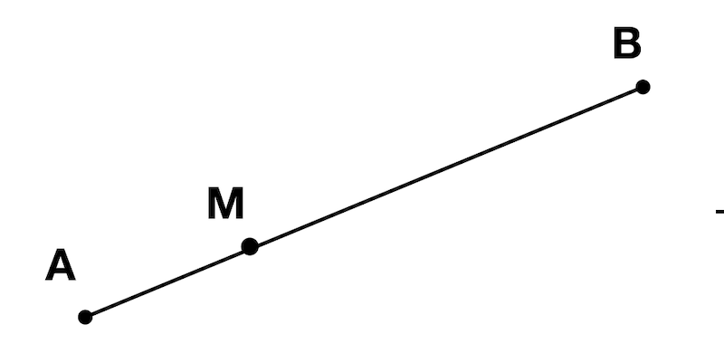
则
\[ \frac{\alpha_M - \alpha_A}{M - A} = \frac{\alpha_B - \alpha_A}{B - A} \]
\[ \alpha_M = \frac{M - A}{B - A} \alpha_A + \frac{B-M}{B-A}\alpha_B \]
这也就是线性插值。
而我们的h计算也就是利用线性插值。我们有每顶点的坐标和h值，我们先可以算出对于每一个y，算出它对应的 xleft, h_left 和 xright, h_right，然后利用比例关系，可以得到三角形中每一个点的 h 值。
x01 = Interpolate(y0, x0, y1, x1)
h01 = Interpolate(y0, h0, y1, h1)
x12 = Interpolate(y1, x1, y2, x2)
h12 = Interpolate(y1, h1, y2, h2)
x02 = Interpolate(y0, x0, y2, x2)
h02 = Interpolate(y0, h0, y2, h2)然后 h 的取值计算也是跟 x 类似
remove_last(x01)
x012 = x01 + x12
remove_last(h01)
h012 = h01 + h12
m = x02.length/2
if x02[m] < x012[m]{
x_left = x02
x_right = x012
h_left = h02
h_right = h012
} else {
x_left = x012
x_right = x02
h_left = h012
h_right = h02
}对于图中的 h_segment 可以这样算：
h_segment = Interpolate(x_left[y-y0], h_left[y-y0], x_right[x-x0], h_right[y-y0]所以画渐变三角形可以这样来做：
DrawShadedTriangle(P0, P1, P2, color){
# sort the points so that y0 ≤ y1 ≤ y2
if y1 < y0 { swap(p1, p0) }
if y2 < y0 { swap(p2, p0) }
if y2 < y1 { swap(p2, p1) }
# compute the x coordinates of the triangle edges
x01 = Interpolate(y0, x0, y1, x1)
h01 = Interpolate(y0, h0, y1, h1)
x12 = Interpolate(y1, x1, y2, x2)
h12 = Interpolate(y1, h1, y2, h2)
x02 = Interpolate(y0, x0, y2, x2)
h02 = Interpolate(y0, h0, y2, h2)
# concatenate the short sides
remove_last(x01)
x012 = x01 + x12
remove_last(h01)
h012 = h01 + h12
# determine which is left and which is right
m = x02.length/2
if x02[m] < x012[m]{
x_left = x02
x_right = x012
h_left = h02
h_right = h012
} else {
x_left = x012
x_right = x02
h_left = h012
h_right = h02
}
# draw the horizontal segments
for y = y0 to y2 {
x_l = x_left[y - y0]
x_r = x_right[y - y0]
h_segment = Interpolate(x_left[y-y0], h_left[y-y0], x_right[x-x0], h_right[y-y0])
for x = x_l to x_r{
shaded_color = color * h_segment[x - xl]
canvas.putPixel(x, y, shaded_color)
}
}
}
看效果：

依旧如同之前一样来放👁和坐标系：

考察空间中的一个点P，看它投影在窗户上的店P‘：

由图可以看出来：
\[ \frac{|P'A|}{|OA|} = \frac{|PB|}{|OB|} \] \[ |P'A| = \frac{|PB| \cdot |OA| }{|OB|} \]
所以可知：
\[ P{_Y}' = \frac{P_Y \cdot d}{P_Z} \]
同理可知：
\[ P{_X}' = \frac{P_X \cdot d}{P_Z} \]
\[ P{_z}' = d \]
然后窗户到canvas的变换是之前的 CanvasToViewport(x, y)的逆变换吧：
ViewportToCanvas{
return (x * Cw/Vw, y * Ch/Vh)
}
ProjectVertex(v){
return ViewportToCanvas(v.x * d / v.z, v.y * d / v.z)
}# The four 'front' vertexes
vAf = [-1, 1, 1]
vBf = [1, 1, 1]
vCf = [1, -1, 1]
vDf = [-1, -1, 1]
# The four 'back' vertexes
vAb = [-1, 1, 2]
vBb = [1, 1, 2]
vCb = [1, -1, 2]
vDb = [-1, -1, 2]
# The front face.
DrawLine(ProjectVertex(vAf), ProjectVertex(vBf), BLUE);
DrawLine(ProjectVertex(vBf), ProjectVertex(vCf), BLUE);
DrawLine(ProjectVertex(vCf), ProjectVertex(vDf), BLUE);
DrawLine(ProjectVertex(vDf), ProjectVertex(vAf), BLUE);
# The back face.
DrawLine(ProjectVertex(vAb), ProjectVertex(vBb), RED);
DrawLine(ProjectVertex(vBb), ProjectVertex(vCb), RED);
DrawLine(ProjectVertex(vCb), ProjectVertex(vDb), RED);
DrawLine(ProjectVertex(vDb), ProjectVertex(vAb), RED);
# The front-to-back edges.
DrawLine(ProjectVertex(vAf), ProjectVertex(vAb), GREEN);
DrawLine(ProjectVertex(vBf), ProjectVertex(vBb), GREEN);
DrawLine(ProjectVertex(vCf), ProjectVertex(vCb), GREEN);
DrawLine(ProjectVertex(vDf), ProjectVertex(vDb), GREEN);这里我偷个懒，就用PIL的画线来处理了，缩短代码量 o(╯□╰)o

我们在空间中放入这样一个正方体

对应的顶点坐标是：
鉴于我们已经知道如何处理三角形，有 drawWiredTriangleFrame 函数在前。我们这里把这个正方体看成是三角形的的状况来处理，我们可以把这个正方体看成以下一堆三角形
ABC ACD
EAD EHD
FEH FGH
BFG BCG
EFB EAB
CGH CDH这样我们就可以用两个列表来表示坐标和三角形：
顶点
0 = ( 1, 1, 1)
1 = (-1, 1, 1)
2 = (-1, -1, 1)
3 = ( 1, -1, 1)
4 = ( 1, 1, -1)
5 = (-1, 1, -1)
6 = (-1, -1, -1)
7 = ( 1, -1, -1)
三角形
0 = 0, 1, 2, red #对应的顶点index
1 = 0, 2, 3, red
2 = 4, 0, 3, green
3 = 4, 3, 7, green
4 = 5, 4, 7, blue
5 = 5, 7, 6, blue
6 = 1, 5, 6, yellow
7 = 1, 6, 2, yellow
8 = 4, 5, 1, purple
9 = 4, 1, 0, purple
10 = 2, 6, 7, cyan
11 = 2, 7, 3, cyan8各顶点，6个面，12个三角形。✔️
三角形的三个点是对应顶点的index，这样的存储能够省下很多空间。
这样来画物体就很简单， 首先投影每个顶点，然后根据顶点的投影来画三角形，记住三角形是projected 顶点的顺序。
RenderObject(vertexes, triangles){
projected = []
for V in vertexes{
projected.append(ProjectVertex(V))
}
for T in triangles{
RenderTriangle(T, projected)
}
}
RenderTriangle(triangle, projected){
DrawWireFrameTriangle(projected[triangle.v[0]],
projected[triangle.v[1]],
projected[triangle.v[2]],
triangle.color)
}不过这里的坐标有些会在镜头后面，这里我们来移动整个物体
\[ \overrightarrow{T} = \begin{pmatrix} -1.5 \\ 0 \\ 7 \\ \end{pmatrix} \]
那么
\[ V' = V + \overrightarrow{T} \]
用PIL自带的函数来三角形 o(╯□╰)o

跟刚才一样，但是我们想画两个位置不同的这样的正方体，如果我们就再写一遍 vertex 和 triangle 的列表太不符合编程的基本原则了。
所以我们这样做，用 model 的观点来看待它：
model {
name = cube
vertexes{
...
}
triangles{
...
}
}
instance{
model = cube
position = (0, 0, 5)
}
instance{
mode = cube
position = (1, 2, 3)
}画它：
RenderScene(){
for I in scene.instances{
RenderInstance(I)
}
}
RenderInstance(instance){
projected = []
model = instance.model
for V in model.vertexes{
V' = V + instance.position
projected.append(ProjectVertex(V'))
}
for T in model.triangles{
RenderTriangle(T, projected)
}
}
继续偷懒，用PIL的画三角形 o(╯□╰)o

之前我们在RenderInstance中变换了物体的位置：
RenderInstance(instance){
projected = []
model = instance.model
for V in model.vertexes{
V' = V + instance.position
projected.append(ProjectVertex(V'))
}
for T in model.triangles{
RenderTriangle(T, projected)
}
}其实对于物体位置，并非只有位置的改变，我们可以 scale, rotation 和 translation. 但是需要注意他们的顺序：

先缩放，再旋转，再移动。

先移动，再旋转，再缩放。
所以一般来说是最后做移动 translation。对于这个变换的描述如下：
instance {
model = cube
transform {
scale = 1.5
rotation = < 45° around the Y axis>
translation = (1, 2, 3)
}
}而这个也可以写成函数的形式，所以 RenderInstance() 可以重写成：
RenderInstance(instance){
projected = []
model = instance.model
for V in model.vertexes{
V' = ApplyTransform(V, instance.transform)
projected.append(ProjectVertex(V'))
}
for T in model.triangles{
RenderTriangle(T, projected)
}
}
ApplyTransform(vertex, transform){
V1 = vertex * transform.scale
V2 = V1 * transform.rotation
V3 = V2 + transform.translation
return V3
}实际上移动👁和移动物体是不可分辨的，比如我们把👁朝前移，也就是把物体靠近，旋转眼睛的位置也是相当于固定👁，旋转物体。
V1 = V - camera.translation
V2 = V1 * inverse(camera.rotation)
V3 = perspective_projection(V2)移动物体
V1 = V * transform.scale
V2 = V1 * transform.rotation
V3 = V2 + transform.translation移动👁
V4 = V3 - camera.translation
V5 = V4 * inverse(camera.rotation)投影
vx = v5.x * d / v5.z
vy = v5.y * d / v5.z看的窗户到canvas
cx = vx * cw / vw
cy = vy * ch / vh当然其实还有一步， canvas画布到屏幕。
用\(C_T, C_R\)表示camera的translation 和 rotation，\(I_R, I_S, I_T\) 表示物体的 rotation， scale 和 translation， P表示 投影，M表示 窗户到画布。 \(V\)表示原始坐标。 \(V'\)表示画布上的点那么
\[ V' = M(P(C_R^{-1}(C_T^{-1}(I_T(I_S(I_R(V))))))) \]
同时注意我们依旧把变化放在最终位置。
写F如下：
\[ F = M \cdot P \cdot C_R^{-1} \cdot C_T^{-1} \cdot I_T \cdot I_S \cdot I_R \]
\[ V' = F(V) \]
是时候复习一波数学知识了。
点：
\[ \begin{pmatrix} x \\ y \\ z \\ 1 \\ \end{pmatrix} \]
向量：
\[ \begin{pmatrix} x \\ y \\ z \\ 0 \\ \end{pmatrix} \]
这样是有意义的，比如点 \(P - O\) 是向量，\(O + \overrightarrow{D}\) 是位置点P， 所以取 w = 1 代表位置更为舒适。而且也赋予了运算更多意义。
\[ \begin{pmatrix} x \\ y \\ z \\ w \\ \end{pmatrix} \]
如果是 v4 需要变成 v3
\[ \begin{pmatrix} x \\ y \\ z \\ w \\ \end{pmatrix} = \begin{pmatrix} x/w \\ y/w \\ z/w \\ 1 \\ \end{pmatrix} = \begin{pmatrix} x/w \\ y/w \\ z/w \\ \end{pmatrix} \]
\[ \begin{pmatrix} A & B & C \\ D & E & F \\ G & H & I\\ \end{pmatrix} \cdot \begin{pmatrix} x \\ y \\ z \\ \end{pmatrix} = \begin{pmatrix} x' \\ y' \\ z' \\ \end{pmatrix} \]
写成齐次方程
\[ \begin{pmatrix} A & B & C & 0 \\ D & E & F & 0\\ G & H & I & 0\\ 0 & 0 & 0 & 1 \end{pmatrix} \cdot \begin{pmatrix} x \\ y \\ z \\ 1 \end{pmatrix} = \begin{pmatrix} x' \\ y' \\ z' \\ 1 \end{pmatrix} \]
\[ \begin{pmatrix} S_x & 0 & 0 \\ 0 & S_y & 0 \\ 0 & 0 & S_z\\ \end{pmatrix} \cdot \begin{pmatrix} x \\ y \\ z \\ \end{pmatrix} = \begin{pmatrix} x \cdot S_x \\ y \cdot S_y \\ z \cdot S_z \\ \end{pmatrix} \]
写成齐次方程:
\[ \begin{pmatrix} S_x & 0 & 0 & 0 \\ 0 & S_y & 0 & 0 \\ 0 & 0 & S_z & 0 \\ 0 & 0 & 0 & 1 \end{pmatrix} \cdot \begin{pmatrix} x \\ y \\ z \\ 1 \\ \end{pmatrix} = \begin{pmatrix} x \cdot S_x \\ y \cdot S_y \\ z \cdot S_z \\ 1 \end{pmatrix} \]
其实如果用不变成齐次方程的话， 移动位置不是线性变换，就更无法用一个矩阵来表示了，感谢聪明的齐次写法：
\[ \begin{pmatrix} T_x \\ T_y \\ T_z \\ 0 \end{pmatrix} + \begin{pmatrix} x \\ y \\ z \\ 1 \\ \end{pmatrix} = \begin{pmatrix} A & B & C & D \\ E & F & G & H\\ I & J & K & L\\ M & N & O & P \end{pmatrix} \cdot \begin{pmatrix} x \\ y \\ z \\ 1 \end{pmatrix} = \begin{pmatrix} x + T_x \\ y + T_y \\ z + T_z \\ 1 \end{pmatrix} \]
通过一点点推理可以知道：
\[ \begin{pmatrix} T_x \\ T_y \\ T_z \\ 0 \end{pmatrix} + \begin{pmatrix} x \\ y \\ z \\ 1 \\ \end{pmatrix} = \begin{pmatrix} 1 & 0 & 0 & T_x \\ 0 & 1 & 0 & T_y\\ 0 & 0 & 1 & T_z\\ 0 & 0 & 0 & 1 \end{pmatrix} \cdot \begin{pmatrix} x \\ y \\ z \\ 1 \end{pmatrix} = \begin{pmatrix} x + T_x \\ y + T_y \\ z + T_z \\ 1 \end{pmatrix} \]
\[ \begin{pmatrix} A & B & C & D \\ E & F & G & H\\ I & J & K & L \end{pmatrix} \cdot \begin{pmatrix} x \\ y \\ z \\ 1 \end{pmatrix} = \begin{pmatrix} x \cdot d \\ y \cdot d \\ z \end{pmatrix} \]
\[ \begin{pmatrix} \cfrac{x \cdot d}{z} \\ \cfrac{y \cdot d}{z} \\ \end{pmatrix} \]
推理可得
\[ \begin{pmatrix} d & 0 & 0 & 0 \\ 0 & d & 0 & 0\\ 0 & 0 & 1 & 0 \end{pmatrix} \cdot \begin{pmatrix} x \\ y \\ z \\ 1 \end{pmatrix} = \begin{pmatrix} x \cdot d \\ y \cdot d \\ z \end{pmatrix} \]
\[ \begin{pmatrix} \frac{c_w}{v_w} & 0 & 0 & 0 \\ 0 & \frac{c_h}{v_h} & 0 & 0\\ 0 & 0 & 1 & 0 \end{pmatrix} \cdot \begin{pmatrix} x \\ y \\ z \\ 1 \end{pmatrix} = \begin{pmatrix} \frac{c_w \cdot x}{v_w}\\ \frac{c_h \cdot y}{v_h}\\ z \end{pmatrix} \]
这样甚至我们还可以吧之前的投影矩阵结合起来，一步达到 3d - 画布的效果：
\[ \begin{pmatrix} \frac{d \cdot c_w}{v_w} & 0 & 0 & 0 \\ 0 & \frac{c_h}{v_h} & 0 & 0\\ 0 & 0 & 1 & 0 \end{pmatrix} \cdot \begin{pmatrix} x \\ y \\ z \\ 1 \end{pmatrix} = \begin{pmatrix} \frac{c_w \cdot x}{v_w}\\ \frac{c_h \cdot y}{v_h}\\ z \end{pmatrix} \]
不过一般来说我们并不采用矩阵，而是直接这样：
\[ x' = \cfrac{x \cdot d \cdot c_w}{z \cdot v_w} \]
\[ y' = \cfrac{y \cdot d \cdot c_h}{z \cdot v_h} \]
再根据之前的
\[ F = M \cdot P \cdot C_R^{-1} \cdot C_T^{-1} \cdot I_T \cdot I_S \cdot I_R \]
\[ V' = F \cdot V \]
分离一下：
\[ M_{Camera} = C_R^{-1} \cdot C_T^{-1} \]
\[ M_{Model} = I_T \cdot I_S \cdot I_R \]
\[ M = M_{Camera} \cdot M_{Model} \]
然后我们根据以上的数学知识，再来画两个正方体，这次我们来抽象更多的东西，首先我们有场景(scene), 在场景中有摄像头/眼睛(camera), 然后还有之前提到的实例(instance)。
对于camera，它有自己的位置和朝向。
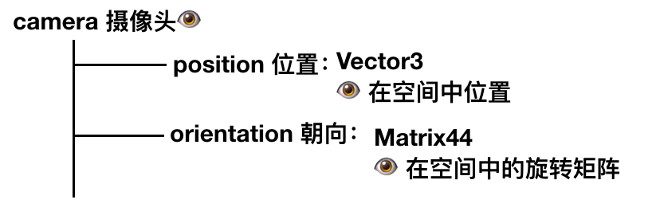
对于instance，它也有自己的位置，朝向和缩放。
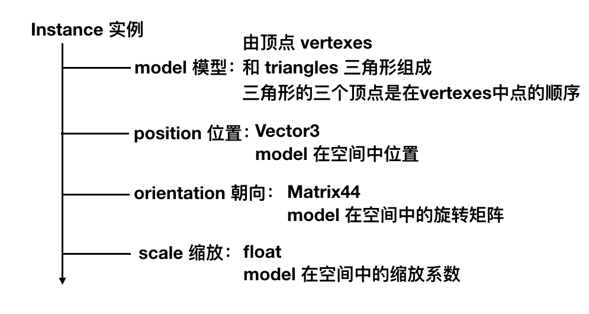
那么代码的部分可以这样写：
RenderModel(model, transform) {
projected = []
for V in model.vertexes {
projected.append(ProjectVertex(transform * V))
}
for T in model.triangles {
RenderTriangle(T, projected)
}
}
RenderScene() {
MCamera = MakeCameraMatrix(camera.position, camera.orientation)
for I in scene.instances {
M = MCamera*I.transform
RenderModel(I.model, M)
}
}放两个正方体，变换一下，然后画一下图:
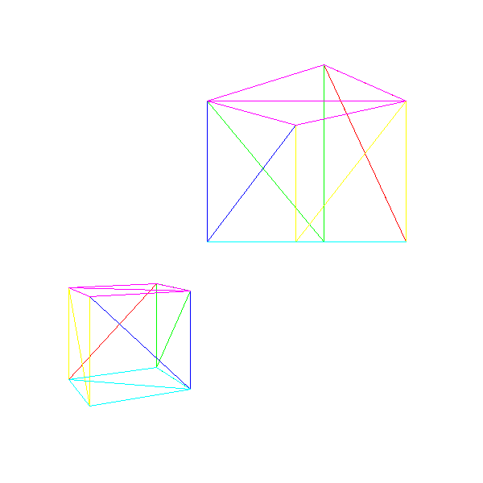
回来看这个投影公式：
\[ P_x' = \cfrac{P_x \cdot d}{ P_Z} \]
\[ P_y' = \cfrac{P_y \cdot d}{ P_Z} \]
但是可能出现的问题是：
所以我们应该学习比如像 z = d 一样用一个平面来裁剪物体.
我们知道三维世界中的一个平面可以这样来：
\[ Ax + By + Cz + D = 0 \]
实际可以写成
\[ \overrightarrow{N} \cdot P + D = 0 \]
\[ \overrightarrow{N} = \begin{bmatrix} A \\ B \\C \end{bmatrix} \]
可以继续写：
\[ k \cdot \overrightarrow{N} \cdot P + k \cdot D = 0 \]
继续：
\[ \overrightarrow{N'} \cdot P + D' = 0 \]
取\(\overrightarrow{N'} = \overrightarrow{N}\)为单位向量，继续写回：
\[ \overrightarrow{N} \cdot P + D = 0 \]
关于这个公式，可以有很多理解，比如其实我们也可以这样理解平面:
法向量为\(\overrightarrow{N}\)，平面上有点\(P'\).
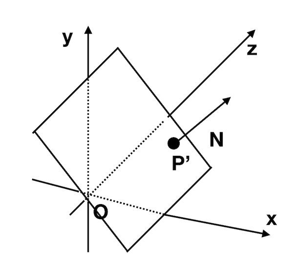
所以会有平面上的所有点\(P\)满足的:
\[ \overrightarrow{N} \cdot (P - P') = 0 \]
而如果我们要计算任意一点 \(Q\) 到平面的位置可以这样来， 计算 \(|Q - Q'|\), \(Q'\) 为Q在平面上的投影，我们可知：
\[ Q - Q' = t \cdot \overrightarrow{N} \]
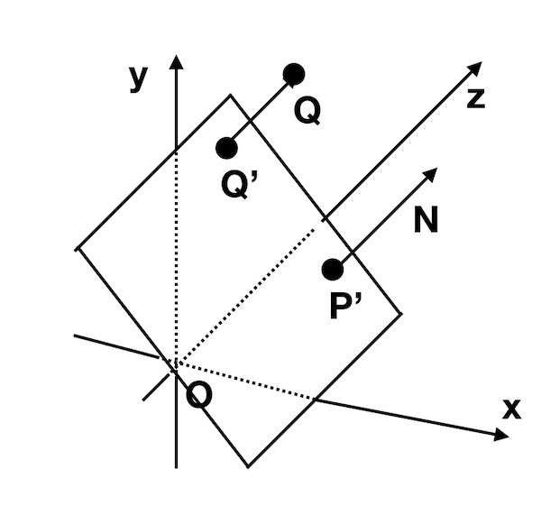
两边同时乘以 \(\overrightarrow{N}\):
\[ \overrightarrow{N}(Q - Q') = t \cdot \overrightarrow{N} \cdot \overrightarrow{N} = t \]
\(Q'\) 在平面上， 代入平面公式
\[ \overrightarrow{N} \cdot Q' + D = 0 \]
所以
\[ \overrightarrow{N} \cdot Q + D = t \]
实际上\(\overrightarrow{N} \cdot Q + D\) 就是 Q 到平面的 'signed distance'，为0 就是P在平面上的特殊状况。
对于 \( Z = d\) 我们就是可以选择 \(\overrightarrow{N} = (0, 0, 1)\)， 对应 \(D = -d\).
根据我们的数据

如果我们的 foc 都选 90°的，那么如下：

所有的 \( D = 0\) 因为都通过原点。
我们先来尝试裁剪整个物体，如果我们刚好有一个球可以包住物体，那么我们可以计算球到平面的位置，如果整个球刚好在平面之内，那么我们就绘制整个物体，如果球在整个平面之外，那么我们就不需要绘制物体。但是对于和平面相交的球，我们就需要进一步的计算。
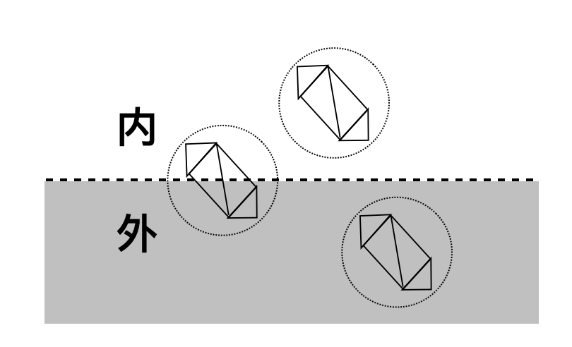
计算的时候就可以用我们刚刚提到的 signed distance.
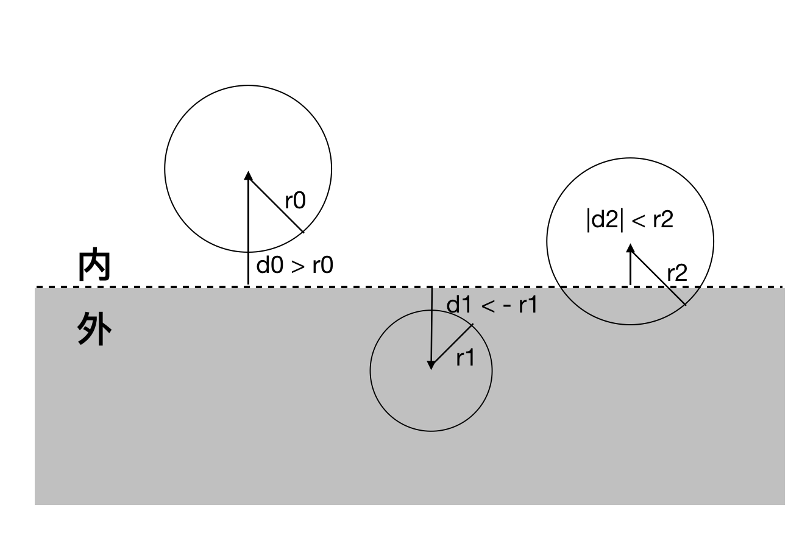
对于相交的状况，我们需要裁剪三角形，对应的也有以下情况：
对于一顶点在平面内，我们需要丢掉\(ABC\), 画三角形\(AB'C'\).
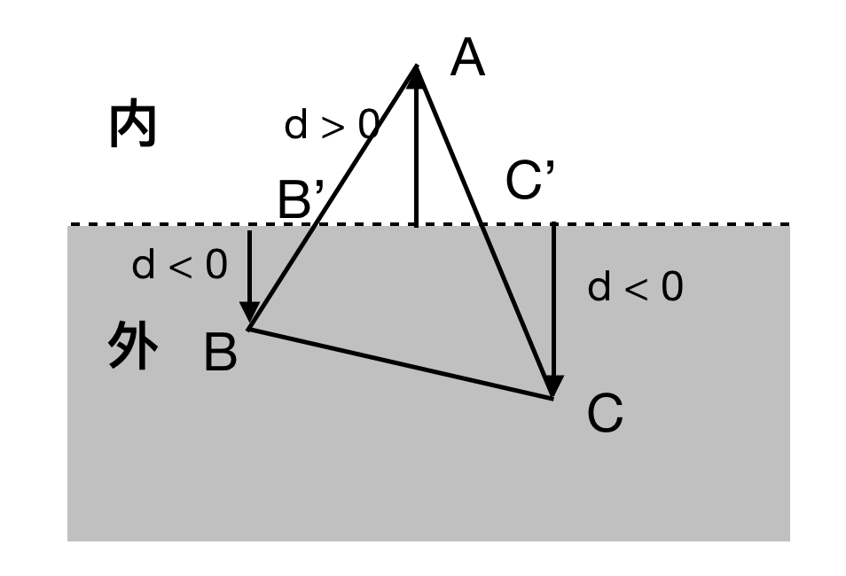
对于两顶点在平面内，我们需要丢掉\(ABC\)， 画\(ABA'\) 和 \(A'B'B\).
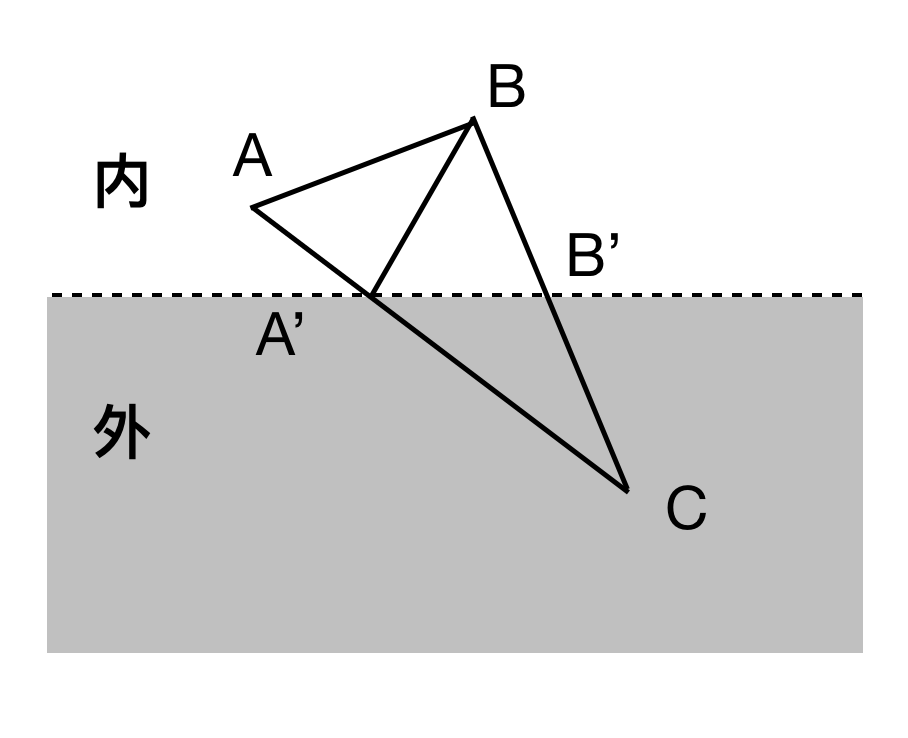
\(B'\) 则是 直线 AB 与平面的交点。
平面公式：
\[ \overrightarrow{N} \cdot P + D = 0 \]
直线可以写成：
\[ P = A + t(B - A), 0 \le t \le 1 \]
代入：
\[ \overrightarrow{N} \cdot (A + t(B - A)) + D = 0 \]
\[ t = \frac{-D - \overrightarrow{N} \cdot A}{ \overrightarrow{N} \cdot (B - A)} \]
因为我们已经假定直线和平面相交，所以 t 总是有解，当我们计算出来 t 之后，再代回原公式得到交点Q：
\[ Q = A + t(B - A) \]
甚至我们可以根据 Q 来计算与 Q 相关的一些属性：
\[ \alpha_Q = \alpha_A + t(\alpha_B - \alpha_A) \]
注意我们整个流程可以这样画出来：
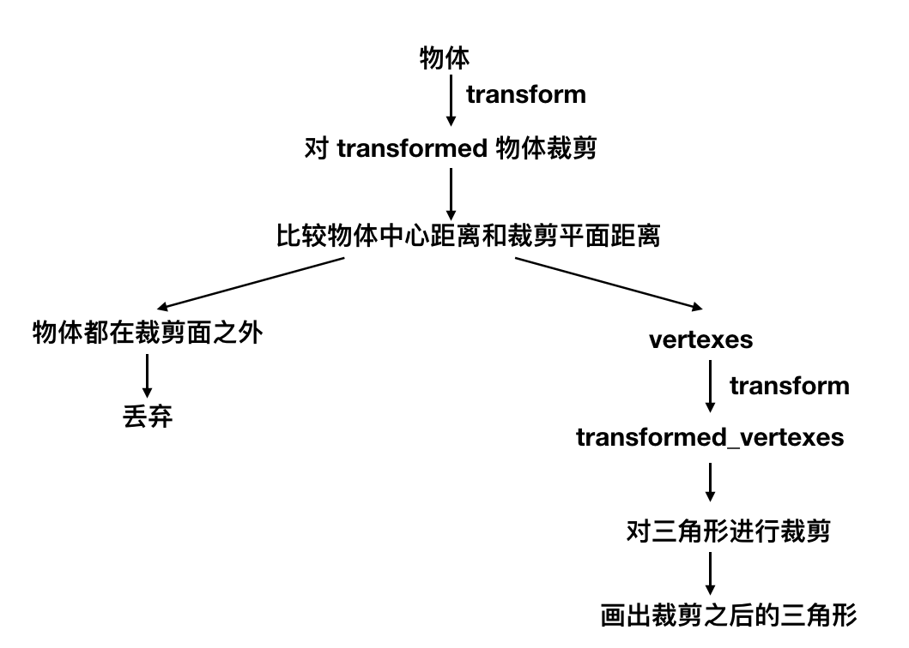
注意代码有比较大的改动。
结果
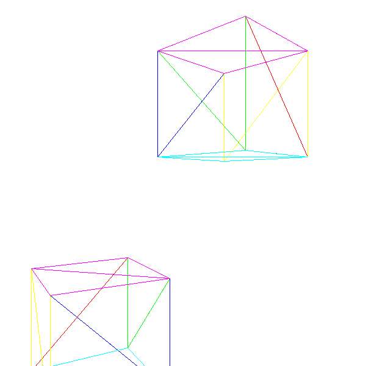
我们先利用现有的代码来填充画正方体的三角形，而不是框架：

不太好看，那是因为我们把有些背面的东西画到了前面，比如下面的正方体的底部。我们画三角形的时候并没有先后顺序，而是根据他们的定义的顺序来画的。
这里我们就要解决这个问题。
最容易想到的办法就是先画后方的东西，然后再画前面的东西，这个实现的话 - 可以首先把三角形transform之后，然后根据他们的z坐标排序，先画后面再画前面。
这个方法的问题在于：

虽然Painter‘s Algorithm对三角形不起作用，但是我们可以用它来处理像素。
对于每个画到画布上的像素，我们只需要画与它最近的颜色。比如\(P_1\) 和 \(P_2\) 都投影到了 z=d上的P点，我们只需要画近的那个点的颜色。

所以对于像素上的每个点，我们需要记录下它的z值，当我们碰到同样这个点，但是有更小的z值的时候我们就需要更新颜色，否则我们保持原有颜色不变，当然最初我们可以把原始的每个像素的z值都赋值给无穷大。
这个z值当然是物体在transform之后但是透视投影之前的z，但是我们还有一个问题，那就是我们只有每个三角形顶点的z值，我们画填充的时候需要知道三角形中每个点的z值，这里先再看一次上面的图，y是随着z的变化而成比例变化，我们可以把z看成y或者x的性质，别忘了我们画渐变三角形的时候是怎么把h看成三角形中每个点的性质而画出来的。
伪码：
z = z_segment[x - xl]
if (z < depth_buffer[x][y]){
canvas.PutPixel(x, y, color)
depth_buffer[x][y] = z
}看结果，效果还不错，至于边缘的状况，是因为我们为了 loop interpolation,把 x, y 都变成了 int，其间难免会有一些损失的状况。

我们把 z 看成 x 的性质然后线性插入求出它。这里有一点点问题，比如：

这里可以很容易算出来 M (0, 0, 6).
但实际上：

计算如下：
\[ \frac{M_z - A_z}{M_x' - A_x'} = \frac{B_z - A_z}{B_x' - A_x'} \]
代入数值：
\[ M_z = 2 + (0 - (-0.5))\frac{10 - 2}{0.1 - (-0.5)} = 8.666 \]
\(M_z \neq 6\)
问题出在我们假设 z 是 是它们的线性组合，即 \(Z = f(x', y')\)，那么 \(Z = Ax' + By'+ C\).对应这样的状况：
\[ f(x' + \Delta x, y' + \Delta y) - f(x', y') = A(x' + \Delta x) + B(y' + \Delta y) + C - Ax' - By' - C = A \Delta x + B \Delta y \]
问题在于这里我们的三角形满足公式：
\[ AX + BY + CZ + D = 0 \]
根据 投影公式：
\[ x' = \frac{Xd}{Z} \]
\[ y' = \frac{Yd}{Z} \]
所以
\[ X = \frac{Zx'}{d} \] \[ Y = \frac{Zy'}{d} \]
代回原式：
\[ \frac{Ax'Z + By'Z}{d} + CZ + D = 0 \]
\[ Ax'Z + By'Z + dCZ + dD = 0 \]
\[ (Ax' + By' + dC)Z + dD = 0 \]
\[ Z = \frac{-dD}{Ax' + By' + C} \]
所以Z并不是 x' 和 y‘ 的象形组合，但是 1/Z 则是：
\[ 1/Z = \frac{Ax' + By' + C}{-dD} \]
所以我们可以用 1/Z 而非 Z 来计算，这个时候，我们就需要把所有的depth_buffer 初始化为0，并且比较需要反向。
效果：

这个对我的并没有太大提升，原因之前已经讲过了。o(╯□╰)o.
实际上这里我们还是做了很多‘无用功’，比如把后方被遮盖的三角形画了一遍。我们还可以效率更高：根据👁可以看到或者看不到来丢弃三角形。

对于看不到的三角形，我们画的时候可以直接丢弃。
这个角度也很容易求出来, 指向外的箭头是三角形的法向量 \(\overrightarrow{N}\), \(\overrightarrow{V}\) 是由三角形上的点P到眼睛的向量。
那么
\[ cos \alpha = \frac{\overrightarrow{N} \cdot \overrightarrow{V}}{|\overrightarrow{N}| \cdot |\overrightarrow{V}|} \]
因为我们只用关心 \(\alpha\) 是大于 90°还是小于90°，我们只需计算 \(\overrightarrow{N} \cdot \overrightarrow{V}\).
而对于三角形指向外部的法向量的方向 \(\overrightarrow{N}\)，我们也很好求， 我们用 \(\overrightarrow{AB} \times \overrightarrow{AC}\) .叉乘就能计算出来。
至于\(\overrightarrow{V}\)，我们用三角形内任意一点\(P - O\)既可，最简单的P的选择可以是 \((A + B + C)/3\).这里也很容易理解， 对于三角形 BC 边上的任意一点 D 可以是
\[D = B + v(C - B), 0 \le v \le 1\]
\[P = A + u(D - A), 0 \le u \le 1\]

\[P = A + u( B + v(C - B) - A), 0 \le u \le 1\]
最终把三角形内部和边上的任意一点P都可以写成：
\[ P = p_1A + p_2B + p_3C \]
\[ p_1 + p_2 + p_3 = 1 \]
\[ 0 \le p_1 \le 1, 0 \le p_2 \le 1, 0 \le p_3 \le 1 \]
其实取 1/3 是这个三角形的中心。
所以我们在代码中添加：看不到的三角形我们提前丢弃，然后再来画。
效果：

代码# 着色 Shading
Shading 并不是照明，照明我们之前已经讲过模型，有点光源，方向光，环境光，并且我们已经知道它是如何与一个点互动。
这里我们要讲的是着色。
我们可以根据公式算出任意一点的光照，因为我们的物体模型都是三角形，我们随意选取三角形中的一点（中心），计算重点的颜色，然后用这一点来着色整个三角形（同样用光照乘以颜色）。
我们来着色两个正方体:

not bad, 但其实我们还是能够看清比如正对着我们这个绿色的面有这个正方形能看出两个三角形的分界线，很正常，按照我们的算法，的确可以看出来。
为了增加一些乐趣性，我现在在场景中添加一个球体，而且这个球体需要满足我们的模型这个类，我们需要用三角形来模仿它。
先从分离的点看起，听起来好像不是很难。

有在O点的半径为 r 的球体，考量球体上任意一点 B。

有
\[ |OB'|^2 + |BB'|^2 = r^2 \]
如果我们把 y 分成 n 份，那么从下往上

\[ y_B = \frac{2 * r * d}{n} - r \]
\[ 0 \le d \le n \]
此时我们有了 \(|BB'|\)， 同样可以得到 \(|OB'| = \sqrt{r^2 - y_B^2}\).
有了 \(OB'\), 我们此时来研究在 OB'

如果我们同样把 xz 平面的这个 2 * π 来登分成 n 份，那么我们可以知道
\[ \alpha = \frac{2 \cdot π \cdot i}{n} \]
\[ 0 \le i < n \]
因为 2 * π 与 0 重合。
这样给我们就可以得到 B' 点的坐标:
\[ x_B = |OB'| \cdot cos \alpha \]
\[ z_B = |OB'| \cdot sin \alpha \]
结合起来我们就可以得到 B 点的坐标，这就是思路：
有了这个思路，可以写出简单的代码：
r = 1
n = 10
from cmath import pi
from math import sqrt, cos, sin
for d in range(n + 1):
yb = 2 * r * d / n - r
for i in range(n):
alpha = 2 * pi * i / n
rprime = sqrt(r * r - yb * yb)
xb = rprime * cos(alpha)
zb = rprime * sin(alpha)
print (xb,'\t',yb,'\t',zb)发现针对 r = 1, n = 10 已经能够得到很好看的效果。
现在来看几个：

基本看不出来球 o(╯□╰)o


好看多了。
有了点之后，我们要把这些点分配成三角形。首先我们肯定不能随机分配，我们需要把靠近点的拿来分配，我们的图中的点就是每一个一个连接起来的，一个最简单的思路就是像这样来分配，靠近的店我们来分配：

所以根据这个思路，可以写出按照点的index来写出的分配像是这样：
triangles = []
for i in range(n):
start = i * n
for j in range(n - 1):
a = start + j
b = a + 1
c = a + n
d = c + 1
triangles.append(Triangle(a, d, b, color))
triangles.append(Triangle(a, c, d, color))有了如何模仿球体的伪码之后，我们把它加入代码中，然后再来看结果：

不出我们所料，球体会有一些很明显的面，虽然有一种可爱的效果 n(≧▽≦)n 但是想画一个'真一点的球体'的人是不会满意的。
接下来我们就来解决如何解决这些问题，以及除了 flat shading 之外的别的 shading 技术。
之前我们看到的球体并不是很‘球’， 一个最简单的优化办法就是像我们画渐变三角形一样，计算出三角形每一个顶点的亮度，然后线性的算出三角形中每一个点的亮度。根据这个来画图。这个办法就叫做 Gouraud 着色，按照这个思路，作用于球和矩形上。

跟上一章的 flat 着色基本没啥区别， o(╯□╰)o
球的状况并没有得到多大改善，这是因为我们依旧是用三角形来模拟球体，而比如相邻的三角形，它们的法向量的计算出来相差很远：

这是属于我们用三角形模拟物体本身的缺陷。一个简单的方法是针对我们每个顶点，我们可以用它‘真实的’法向量，而不是计算出来的。
对于球体，它的法向量就是连接从球心指向球上这一点的向量。这对于我们来说，刚好是小菜一叠，因为我们模拟球的时候就是生成了点，所以我们只要给出对应点的坐标就行了。
按照这样的思路，我们来更新一下 model 原型：
model {
name = cube
vertexes {
0 = (-1, -1, -1)
1 = (-1, -1, 1)
2 = (-1, 1, 1)
...
}
triangles {
0 = {
vertexes = [0, 1, 2]
normals = [(-1, 0, 0), (-1, 0, 0), (-1, 0, 0)]
}
...
}
}所以我们生成球的代码稍作修改：
def generateSphere(n, r, color):
"""
this will generate a sphere sitting in O and divide as mentioned
"""
vertexes = []
triangles = []
for d in range(n+1):
yb = 2 * r * d / n - r
for i in range(n):
alpha = 2 * pi * i / n
rprime = sqrt(r * r - yb * yb)
xb = rprime * cos(alpha)
zb = rprime * sin(alpha)
vertexes.append(Vector3(xb, yb, zb))
for i in range(n):
start = i * n
for j in range(n - 1):
a = start + j
b = a + 1
c = a + n
d = c + 1
triangles.append(Triangle(a, d, b, color, vertexes[a], vertexes[d], vertexes[b]))
triangles.append(Triangle(a, c, d, color, vertexes[a], vertexes[c], vertexes[d]))
return Model(vertexes, triangles, Vector3(0, 0, 0), r)当然对应的，我们需要更改 cube 的模型，给每个点也填上对应的法向量。
然后计算的时候注意我们做变换的时候法向量也要跟着改变。

这样一看，球体好看一些o(╯□╰)o
Gouraud 着色 还有一个问题，就是当我们把点光源挪近的时候，我们当然期待物体会更亮，因为靠近了，但问题是物体反而变暗了。
原因是因为我们计算的是每个顶点上面的亮度，然后根据再根据顶点来做线性插入：

是因为点的法向量和点光源之间的角度 ɑ 会趋近于90°，然后 cos ɑ 会趋近于0，这样导致的结果是我们做线性插入会整个把三角形变暗，而不是按照点的真正的法向量和点光源之间夹角变小，变得更亮。
在这之上还能想到的优化就是针对每个像素来看它的光照，毕竟我们在光线追踪中就是这么做的。
在这里看看我们的计算，针对画布上的一个点P(x', y')，我们知道:
\[ x' = \frac{Xd}{Z} \]
\[ y' = \frac{Yd}{Z} \]
同时我们在做隐藏面消除的时候有 1/z 这个值：
\[ x' = Xd\frac{1}{Z} \]
\[ y' = Yd\frac{1}{Z} \]
我们所以我们可以从画布上的投影的点得到空间3d中的点：
\[ X = x' / d_{\frac{1}{Z}} \]
\[ Y = y' / d_{\frac{1}{Z}} \]
\[ Z = 1 / d_{\frac{1}{Z}} \]
除此之外，需要知道:
按照这个思路，着色结果：

同时发现在 Gouraud 着色中遇到的越靠近点光源越暗的问题也被解决了。因为我们这里的法向量是线性插入得到的。cool.
我们不仅仅想画球体和正方体，我们也像让物体‘逼真’起来，比如我们想画一个木头的集装箱。有两个思路：
我们采取第二种方式因为我们已经有了画好的立方体了，╮(╯_╰)╭何况第一种会增加更多的几何，更复杂意味着更慢。
首先我们需要一张图来覆盖在立方体上

然后我们需要决定这张图如何放在图片上，一个简单的方法是针对每个三角形来看

注意只用图的一部分也是完全ok的。
我们定义 u 和 v
\[ 0 \le u \le 1 \]
\[ 0 \le v \le 1 \]
(u, v) 会对应到图片(宽w, 高h)上的 (u(w - 1), v(h - 1))，这样定义的的好处当然很多啦， 比如我们可以随意换纹理图，还可以随意换纹理图大小...等等等。

针对每个三角形的顶点我们有 (u, v)， 同样用线性插值算出对于三角形的每一点的 (u, v)，然后根据这个 (u, v) 来画图。

看结果：

不错，但是如果我们仔细一点看正方体的中间部分，发现它是弯折的，o(╯□╰)o，问题还是在于我们假设 u 和 v 在屏幕中是线性变化的。这就跟我们 Depth buffer 一样的道理，我们需要用的是
\[ u = \frac{\frac{u}{z}}{\frac{1}{z}} \]
\[ v = \frac{\frac{v}{z}}{\frac{1}{z}} \]
修正之后的效果：